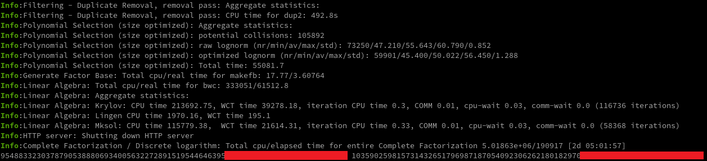

简介
RSA 是目前全世界使用最广泛的公钥密码体系. 公钥密码体系中，有两类密钥：私钥与公钥. 私钥是由算法生成的，并由操作者妥善保管. 公钥是从私钥推导而出的，可以公开发布给任何人. 公钥及其对应的私钥为一对密钥.
RSA 密钥的大小指的是 RSA 加密或解密运算中模的长度（按 bit 计算），它决定了密钥的整体安全性. 截至 2023 年 8 月，推荐的最小模长为 2048 位. 不过总有开发者罔顾安全性最佳实践，仍然在实际项目中使用 512 位 RSA 密钥.
本文将演示如何使用 CADO-NFS 将 RSA-512 的公钥恢复成 PKCS#1 / PKCS#8 格式的私钥.
免责声明: 本文仅供教育目的，作者不支持或鼓励任何非法活动. 本文提供的信息仅供参考，不应用于任何非法活动. 作者不对滥用本文提供的信息所造成的后果负责.
RSA 小复习
形式化表述
-
选择两个素数 $p, q$ 将 $N:=pq$ 作为密钥的模.
-
计算 $\lambda(N)=\lambda(pq)=\operatorname{lcm}(p-1,q-1)$.
这里 $\lambda(n)$ is Carmichael 函数, 定义见 $\eqref{carmichael}$.
$$ \begin{equation} \lambda(n):=\min\{m>0: \forall a \in{}\mathbf{R}^*_n, a^m\equiv 1\pmod n\}\label{carmichael} \end{equation} $$
其中 $\mathbf{R}^*_{n}{}:= \{i\in{}\mathbf{R}_n: \gcd(n, i) = 1\}$ 是模 $n$ 的简化剩余系.
许多教科书使用的是 Euler 函数 $\varphi(n)$，这不影响算法的正确性.
-
选择一个公开指数 $e\neq 1$ 使得 $e\in{}\mathbf{R}^*_{\lambda(n)}$，即 $e$ 与 $\lambda(n)$ 互素.
-
计算私有指数 $d:\equiv e^{-1}\pmod{\lambda(n)}$.
-
对于端到端加密，加密机定义为 $E(m):\equiv m^e\pmod N$ 而解密机定义为 $D(m):\equiv m^d\pmod N$.
-
签名机定义为 $\DeclareMathOperator*{\concat}{\Vert} S(m):=D( \operatorname{hash}(m))$
此处并不打算给出任何关于 RSA 正确性的证明，感兴趣的读者可以阅读 William Stein 在他的著作 Elementary Number Theory: Primes, Congruences, and Secrets 中的证明.
这里的形式化表述比较学院派，生活中的算法实现有更多苛刻的安全条件，例如 $p,q$ 间的距离要适度, 公开指数至少满足 $e>2$ 的要求，并且密码学函数库往往用 $e:=65537$ 这一固定值作为公开指数，更多实践可参考此处.
现实中的 RSA 成分
从上面的形式化表述中，显然 3 元组 $(p, q, e)$ 能够唯一地决定一对 RSA 密钥. 理论上，一个 RSA 私钥成分的表示可以用 $(p, q, d)$ 而其对应的公钥成分就是 $(N, e)=(pq, e)$. 当然了，使用 $(p, q, e)$ 也能作为 RSA 私钥成分的一种表示方式.
数学上来看，私钥的成分表示方式其实并不唯一，那么在现代的私钥文件中究竟存储了什么东西呢？换句话说，在 PKCS#1 / PKCS#8 这些私钥格式中，究竟存储了什么样的成分？事实上现代私钥格式中，为了权衡算法的时空性能，存储了更多的成分.
私钥成分
让 OpenSSL 给我们生成一个 RSA-512 私钥，并列出其成分：
|
|
默认情况下 openssl genrsa 会生成 PKCS#8 的格式，上面的私钥中包含了：
- modulus 对应了 RSA 的模 $N:=pq$
- publicExponent 对应了公开指数 $e$, OpenSSL 在生成私钥时总使用固定值 $e:=65537$
- privateExponent 对应了私有指数 $d:\equiv e^{-1}\pmod{\lambda(n)}$
- prime1 和 prime2 对应了 $p$ 和 $q$
那么 exponent1, exponent2, coefficient 究竟是什么东西?
CRT 改进的快速幂
对解密机 $D(m):\equiv m^d\pmod N$ 与签名机 $S(m)$ 用中国剩余定理（CRT）变换后，会出现上面额外的成分，这是一种能够加速解密与签名过程的小技巧，本质上来说这是一种大数快速幂（取模）的算法，对于大数的乘法，无论采用何种算法（如 Karatsuba 或 FFT 等），其时间复杂度都不再能视作 $O(1)$，一般大数运算都会由密码学函数库提供.
计算 $m^d\pmod N$ 等价于解方程 $\eqref{crt-1}$，显然有解
$$ \begin{equation} x\equiv m^d\pmod{pq}\label{crt-1} \end{equation} $$
由于 $p,q$ 是素数，它们显然互素，即 $\gcd(p,q)=1$. 根据 CRT 的表述，方程 $\eqref{crt-1}$ 能拆开写成方程组 $\eqref{crt-2}$ 并拥有相同解集.
$$ \begin{equation} \left\{ \begin{aligned} x&\equiv m^d\pmod{p} \\ x&\equiv m^d\pmod{q} \end{aligned} \right.\label{crt-2} \end{equation} $$
通过这样做，模 $N:=pq$ 在位数上已经被劈开分成了 $p,q$，自然地为 $d$ 的降幂提供了机会.
对于一个素数，它的 Carmichael 函数值与 Euler 函数值相同，即
$$ \lambda(p)=\varphi(p)=p-1,\lambda(q)=\varphi(q)=q-1 $$
令 $d_p:\equiv d\pmod{\lambda(p)}$ 与 $d_q:\equiv d\pmod{\lambda(q)}$，即存在 $k_p,k_q\in\mathbb{Z}$ 使得
$$ d=k_p\lambda(p)+d_p=k_q\lambda(q)+d_q, $$
通过应用 Euler 定理，整理得到降幂形式 $\eqref{crt-3}$，
$$ \begin{equation} \left\{ \begin{aligned} x&\equiv m^d\equiv m^{k_p\lambda(p)+d_p}\equiv m^{d_p}\pmod{p} \\ x&\equiv m^d\equiv m^{k_q\lambda(q)+d_q}\equiv m^{d_q}\pmod{q} \end{aligned} \right.\label{crt-3} \end{equation} $$
这些更小的指数 $d_p$ 和 $d_q$ 在之前的成分列表中叫做 exponent1 和 exponent2，在生成私钥时它们就已经算好这两个成分，并存储在私钥文件中.
根据 CRT 方程组的算法，解为 $\eqref{crt-4}$
$$ \begin{equation} x\equiv m^{d_q} + q^*(m^{d_p}-m^{d_q})q \pmod{pq}\label{crt-4} \end{equation} $$
其中 $q^*:\equiv q^{-1} \pmod p$，在之前的成分列表中叫做 coefficient.
综上所述，那些额外的成分一般叫做 CRT 成分，如下所示：
- exponent1（对应 prime1 $p$）定义为 $d_p:\equiv d\pmod{\lambda(p)}$, where $\lambda(p)=p-1$
- exponent2（对应 prime2 $q$）定义为 $d_q:\equiv d\pmod{\lambda(q)}$, where $\lambda(q)=q-1$
- coefficient 定义为 $q^*:\equiv q^{-1} \pmod p$
公钥成分
使用 OpenSSL 将之前的私钥导出为公钥，并查看其成分：
|
|
公钥成分是更加简单的，恰恰好好是 $(N,e)$.
恢复密钥
RSA 中的陷门保证了无法轻易从公钥恢复出私钥，除非知道了 RSA 模的分解式即 $N=pq$. 在现有的分解数据库 factordb 上寻找 RSA 模的分解式是一个不错的方法，但在大多数场合下很难奏效.
要是有人使用了 RSA-512 的密钥，攻击者利用 CADO-NFS 实现的 NFS 算法不花一个星期就能把 RSA 模分解出来.
分布式分解
CADO-NFS 是一个完备的软件套装，其中就包含了用于分布式计算的中心服务端，这里是一些注意事项：
-
无论是服务端还是客户端，要尽量使用相同的 Linux 发行版或者 Docker 镜像
不然的话可能会遇到
glibc的版本兼容性问题. -
在启动了 CADO-NFS 的服务端之后，需要留意会输出一段可供恢复分解进度的命令，如果服务端意外退出，可以使用该命令恢复到退出前的进度.
前置步骤
-
为了编译 CADO-NFS，除了常用的工具链外，还要安装
cmake和libgmp3-dev. -
下载 CADO-NFS 源代码 tarball后， 解压并进入目录.
-
运行
make -j8开始构建. (可以根据机器情况，调整这里的并发任务数) -
这个时候
./cado-nfs.py和./cado-nfs-client.py应该可以用了. -
从公钥文件
pub.pem获取 RSA 的模，从此处开始一些数字末尾被抹掉了.1 2 3 4 5 6 7 8 9 10 11$ openssl pkey -pubin -in pub.pem -noout -text Public-Key: (512 bit) Modulus: 00:bc:dd:6e:bc:57:ae:a2:be:7d:ad:70:8f:71:0a: 80:86:3b:c5:18:f7:ab:4d:5e:bd:a5:64:b2:65:d2: 7c:d9:4c:5e:e3:c3:bc:33:b7:60:30:98:bd:6d:c4: **:**:**:**:**:**:**:**:**:**:**:**:**:**:**: **:**:**:**:** Exponent: 65537 (0x10001) $ openssl rsa -pubin -in public.pem -noout -modulus Modulus=BCDD6EBC57AEA2BE7DAD708F710A80863BC518F7AB4D5EBDA564B265D27CD94C5EE3C3BC33B7603098BD6DC4****************REDACTED****************得到了十六进制表示，需要转为十进制，例如可以直接让 Python 输出数值
1 2$ python -c "print(0xBCDD6EBC57AEA2BE7DAD708F710A80863BC518F7AB4D5EBDA564B265D27CD94C5EE3C3BC33B7603098BD6DC4****************REDACTED****************)" 9891661152720289911993780388856560399924301310754393756699908896661301299157403390541217712185535804***********************REDACTED***********************
服务端
|
|
客户端
|
|
将这里的 server 改成服务器的地址，每台机器可调整 --override -t 8 的线程数，以提高分解过程的单机并行度.
结果
最后的输出便是两个素数，可以看下面的图.
95488332303787905388806934005632272891519544646395*************************** 103590259815731432651796987187054092306262180182970***************************

分解结果
恢复私钥
为了更方便地基于 $p, q, n, e$ 创建私钥，此处推荐 rsatool.py 这个工具，下载对应仓库并解压后，在目录中运行 pip install . 即可安装相关依赖.
|
|
便得到了恢复的私钥 recovered.key，值得注意的是，该工具生成的私钥格式为 PKCS#1，可以转换成 PKCS#8 格式，只需运行
|
|